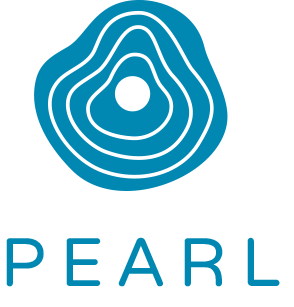
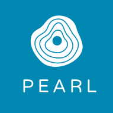
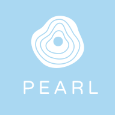
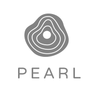

Logo
Color Palette
#0088b3
Deep Ocean
Deep Ocean
#aad8f2
Sky Blue
Sky Blue
#eae5da
Beach Sand
Beach Sand
#ff9469
Sunset
Sunset
Typography
Proxima Nova is used for headings
Second-level heading example
Third-level heading example
FF Tisa Pro for body and paragraph text. The narwhal, or narwhale (Monodon monoceros), is a medium-sized toothed whale that lives year-round in the Arctic. One of two living species of whale in the Monodontidae family, along with the beluga whale, narwhal males are distinguished by a long, straight, helical tusk, actually an elongated upper left canine. Found primarily in Canadian Arctic and Greenlandic waters, rarely south of 65°N latitude, the narwhal is a uniquely specialized Arctic predator.
Logo Variations

White on primary

White on secondary

Grayscale